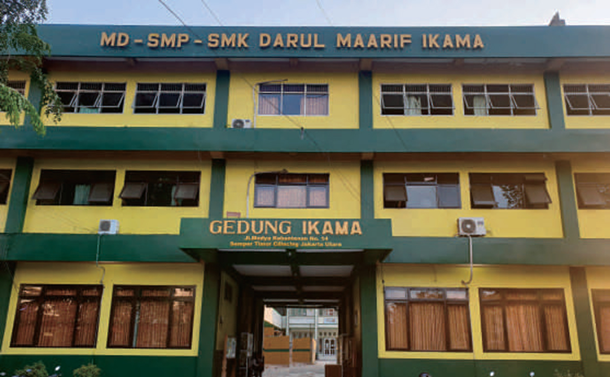
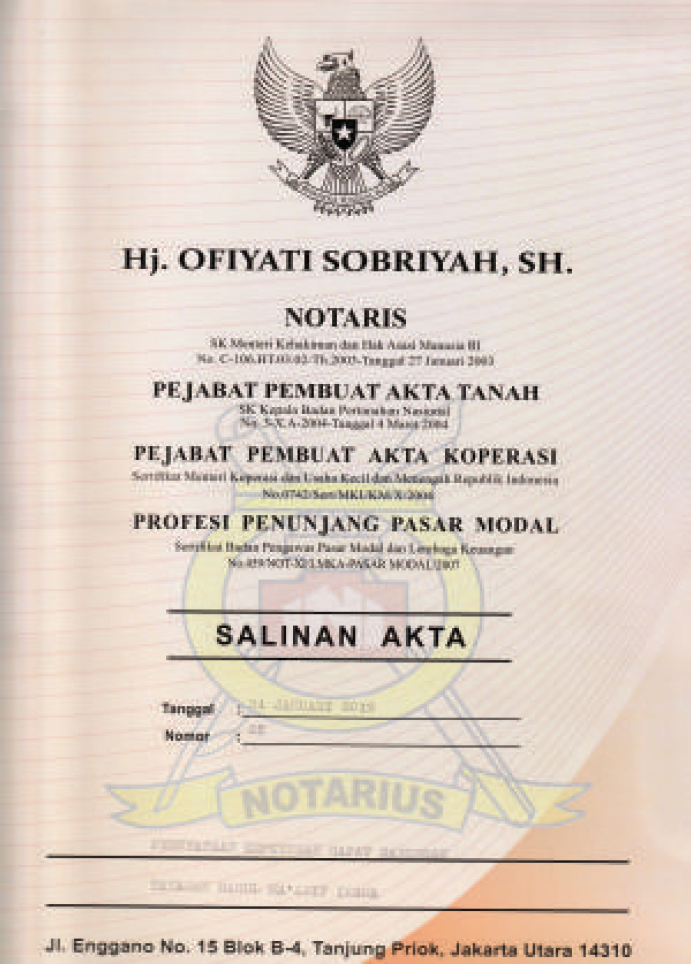
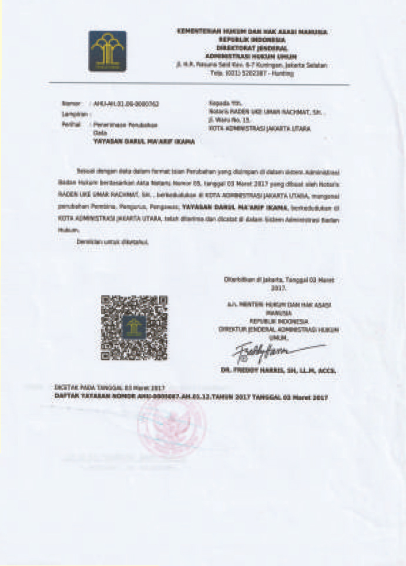
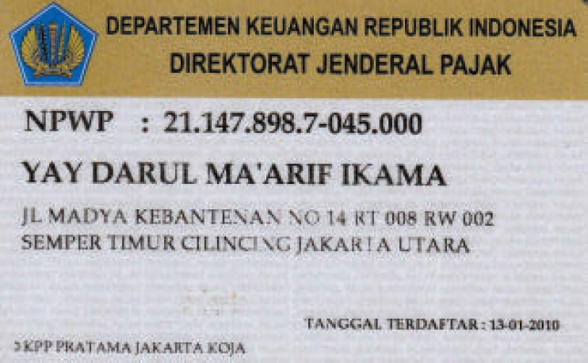

Seputar Yayasan
Yayasan Darul Ma'arif IKAMA adalah lembaga pendidikan dan sosial yang berkomitmen untuk mencerdaskan kehidupan bangsa melalui integrasi nilai-nilai keislaman dan ilmu pengetahuan modern. Berdiri sebagai mercusuar pendidikan, kami berupaya menciptakan lingkungan belajar yang inspiratif bagi santri dan siswa.

Visi Kami
"Kuat Akidah, Islam Kaffah, Luhur Pekerti, Unggul Prestasi."
Misi Kami
- • Membentuk peserta didik yang kuat akidah, beriman, bertakwa, dan berakhlak mulia serta rajin beribadah
- • Menjamin hak belajar setiap anak tanpa diskriminasi, termasuk peserta didik berkebutuhan khusus
- • Menumbuhkan budaya hidup sehat secara fisik, mental, dan emosional dalam lingkungan sekolah
- • Meningkatkan manajemen pendidikan yang adaptif, kolaboratif, dan menjamin mutu
- • Membangun profil pelajar yang mandiri, bernalar kritis, dan kreatif
- • Menyelenggarakan pembelajaran yang berkesadaran, bermakna, dan menyenangkan
- • Menciptakan lingkungan sekolah sebagai ruang tumbuhnya intelektual, sosial, emosional, dan budaya lokal,
- • Mengembangkan keterampilan abad 21 seperti literasi digital, komunikasi, kolaborasi, dan berpikir kritis
- • Menghasilkan lulusan yang unggul dalam bidang akademik dan non-akademik,
- • Meningkatkan keterlibatan aktif orang tua dan masyarakat dalam proses Pendidikan
Sejarah Singkat
Berawal dari semangat organisasi Ikatan Keluarga Madura, para tokoh masyarakat dan ulama setempat untuk menyediakan akses pendidikan berkualitas yang terjangkau, Yayasan Darul Ma'arif resmi didirikan sebagai wadah perjuangan intelektual dan spiritual.
Dari sebuah bangunan sederhana, kini yayasan telah berkembang pesat dengan mengelola unit pendidikan tingkat dasar (MD), tingkat menengah pertama (SMP), hingga tingkat menengah kejuruan (SMK), serta menjadi rumah bagi komunitas IKAMA (Ikatan Keluarga Madura) yang mempererat tali kekeluargaan para alumni dan keluarga besar Yayasan Darul Ma'arif.
Legalitas Formal
- Nama: YAYASAN DARUL MA’ARIF IKAMA
- Alamat Kantor: Jalan Madya Kebantenan No. 14 RT.008 RW. 002 Kel. Semper Timur, Kec. Cilincing Kota Adm. Jakarta Utara Prov. DKI Jakarta
- Akte Pendirian: Vivi Novita Ranadireksa, SH, M, Kn Nomor: 03 Tanggal 06 Januari 2017
- Akte Perubahan: Hj. Ofiyati Sobriyah, SH Nomor: 25 Tanggal 31 Januari 2019
- KEMENHUMKAM: AHU-AH.01.06-0000762
- NPWP: 21.147.898.7-045.000
- No. Rekening Yayasan: Bank DKI, An/ Yayasan Darul Ma’arif IKAMA, No Rek. 209.12.00093.7


